Barra de menus
Tenha seus aplicativos favoritos disponíveis na barra de menus do macOS.
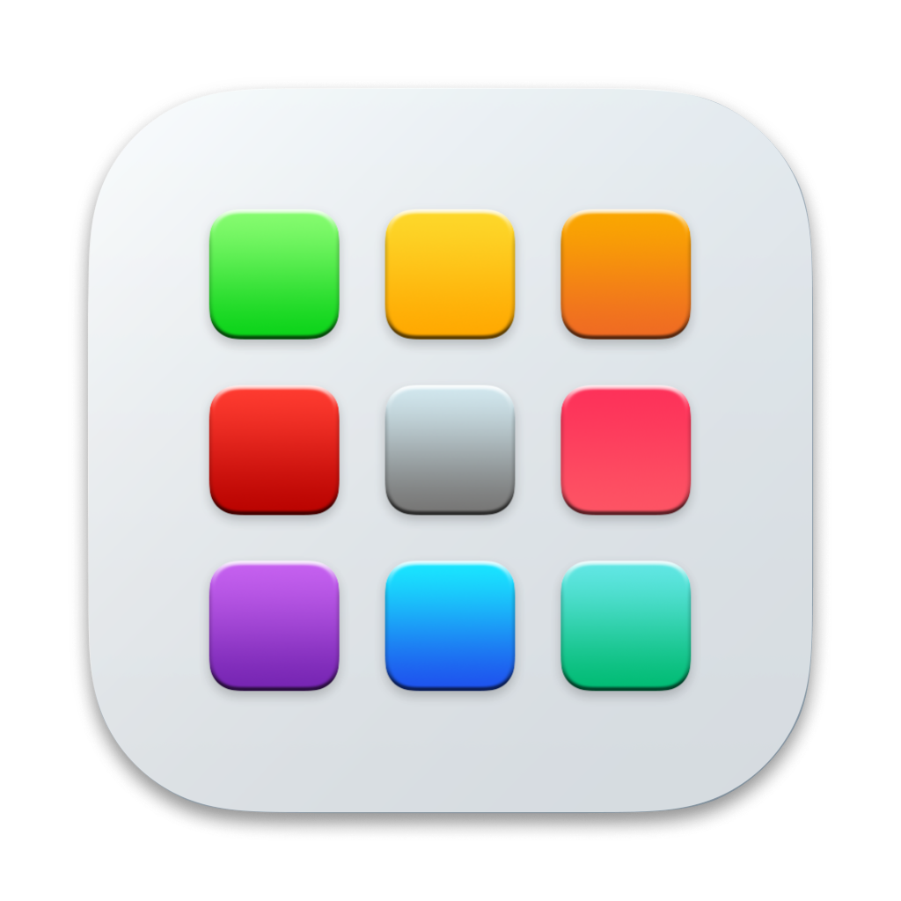
Appz é um launcher para macOS focado em simplicidade. Acesse seus aplicativos favoritos pela barra de menus ou pelo Launchpad personalizado.
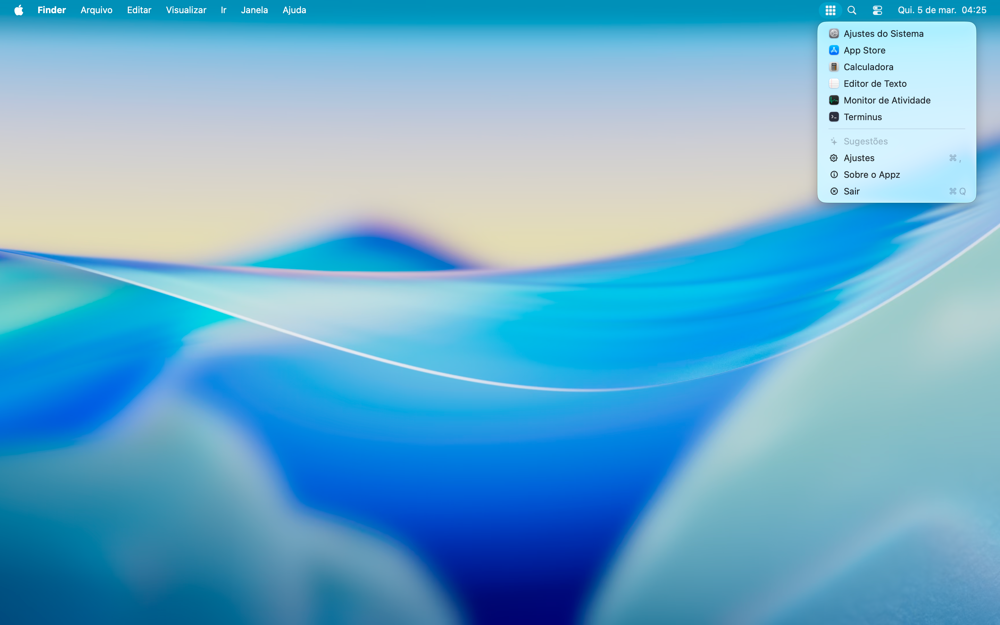
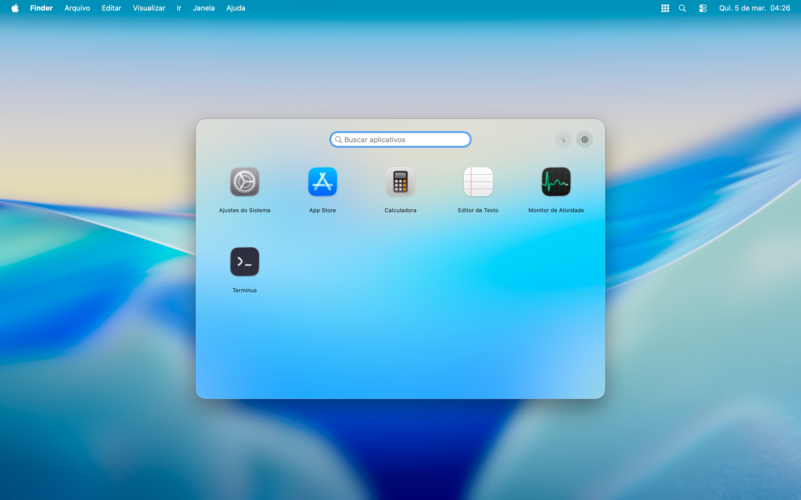

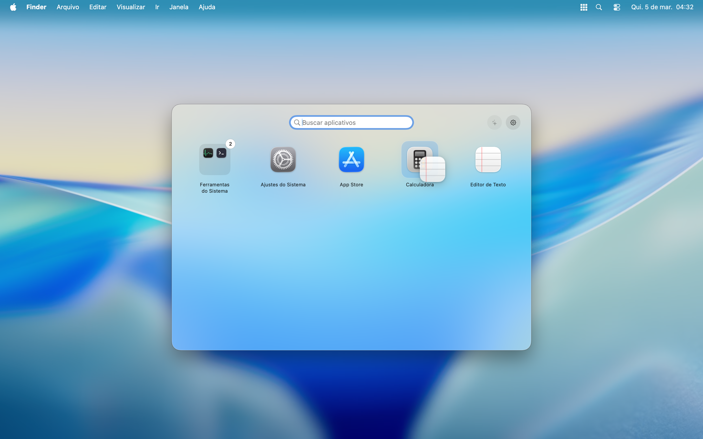
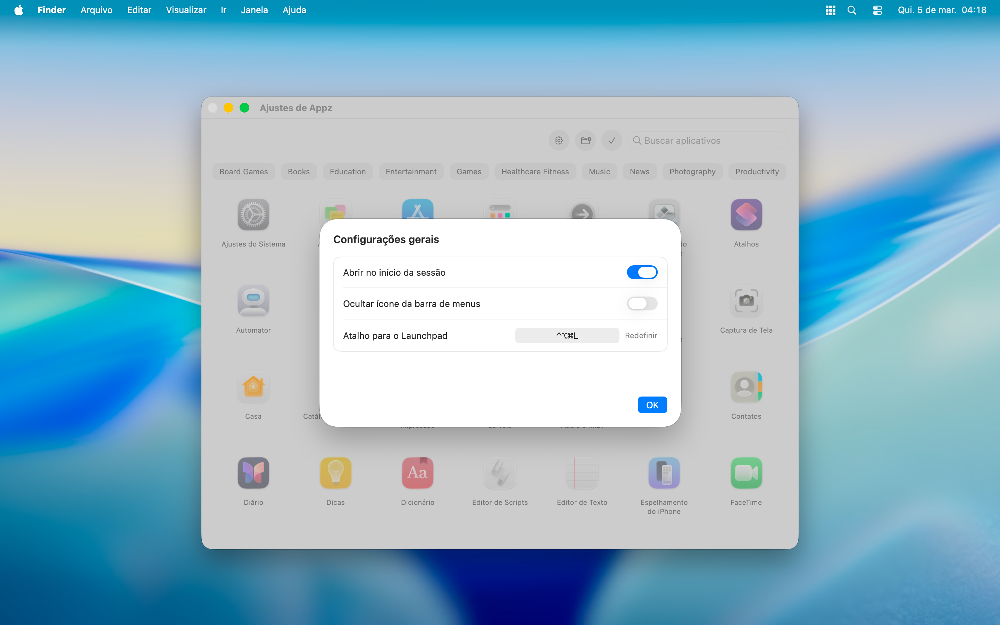
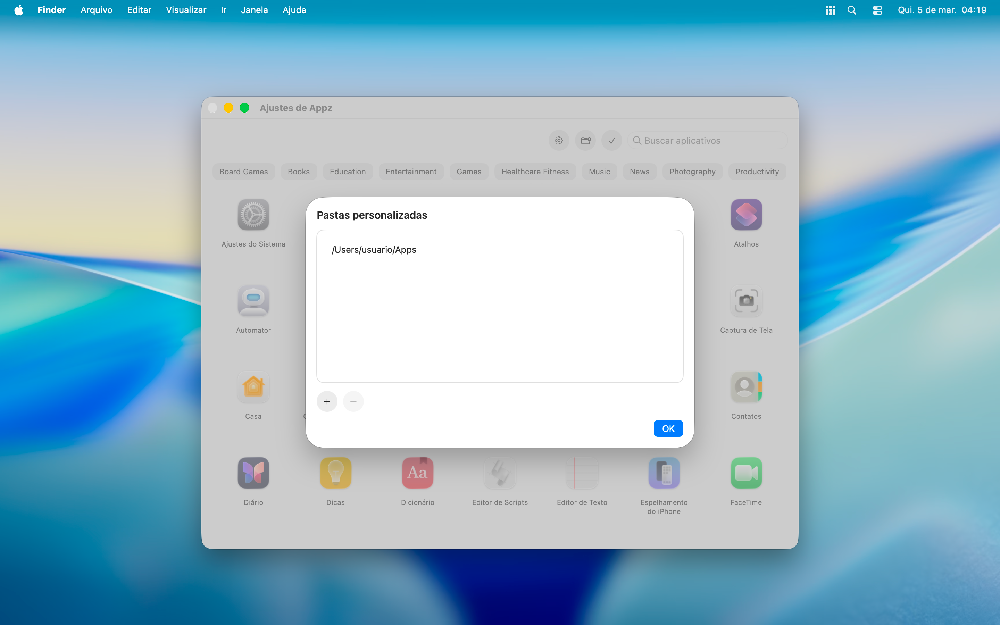
Tenha seus aplicativos favoritos disponíveis na barra de menus do macOS.
Acesse o Appz de qualquer lugar com um atalho global.
Crie grupos de aplicativos e organize o Launchpad do seu jeito.
Crie novos grupos ou adicione aplicativos nos grupos existentes.
O Appz observa seu padrão de uso e sugere os aplicativos que você mais usa.
Prefere um visual mais limpo? Oculte o ícone da barra de menus.
Nos ajustes do Appz, acesse as configurações gerais e escolha se deseja permitir que o Appz abra no início da sessão, ocultar o ícone da barra de menus ou personalizar o atalho global do Launchpad.
O Appz busca os aplicativos instalados no seu Mac, mas você pode adicionar pastas personalizadas contendo os aplicativos que não foram instalados no sistema.
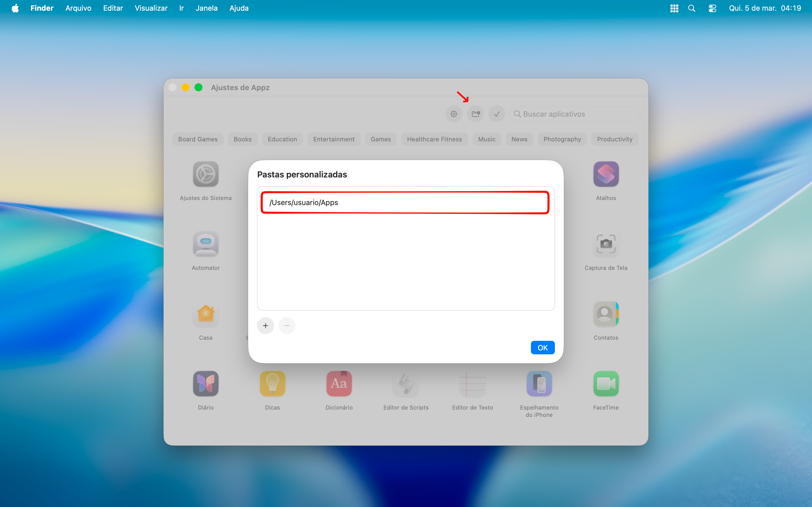
Clique no aplicativo para marcá-lo como favorito. Clique novamente para desmarcá-lo.
Os aplicativos usados com maior frequência que não foram definidos como favoritos serão sugeridos pelo Appz; aceite ou ignore a sugestão.
Os grupos ajudam a organizar os aplicativos no Launchpad. Você pode criar grupos arrastando um aplicativo sobre o outro.
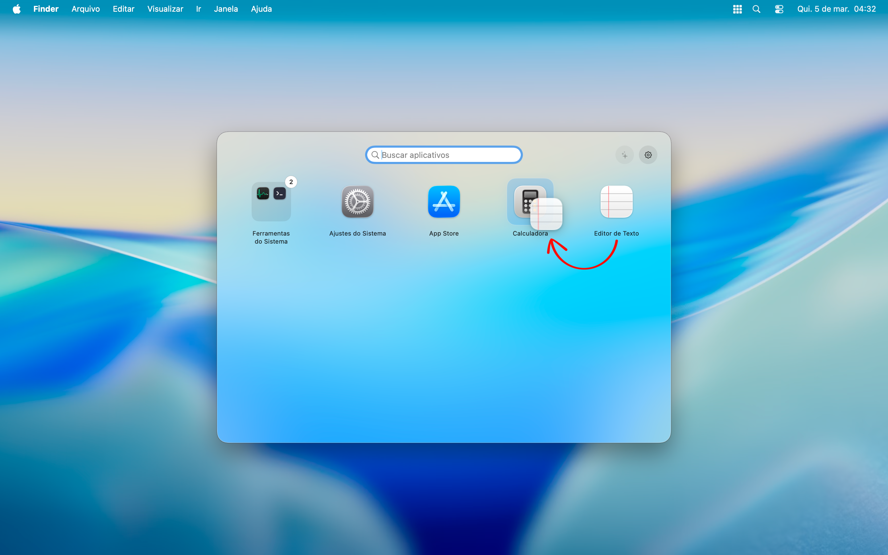
Arraste um aplicativo para um grupo existente para adicioná-lo.
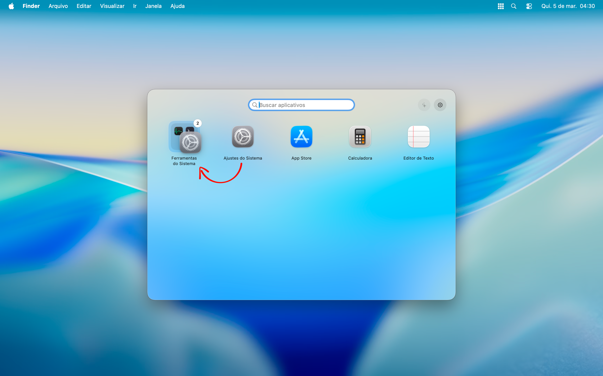
Os grupos podem ser gerenciados abrindo o menu contextual pelo clique secundário. Use as opções para criar, editar, adicionar ou remover apliativos. Um grupo pode ser criado pelo menu contextual do aplicativo.
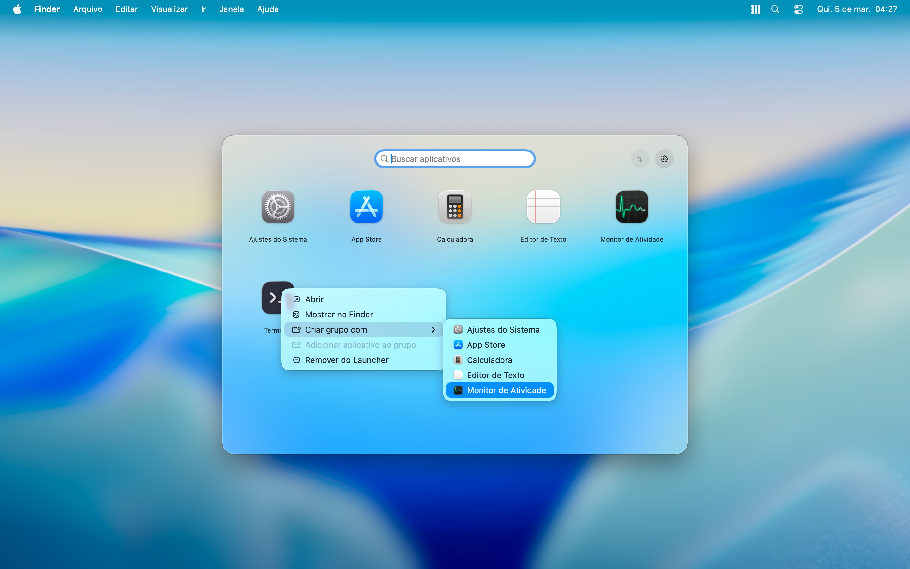
Para editar um grupo use o menu contextual do grupo.
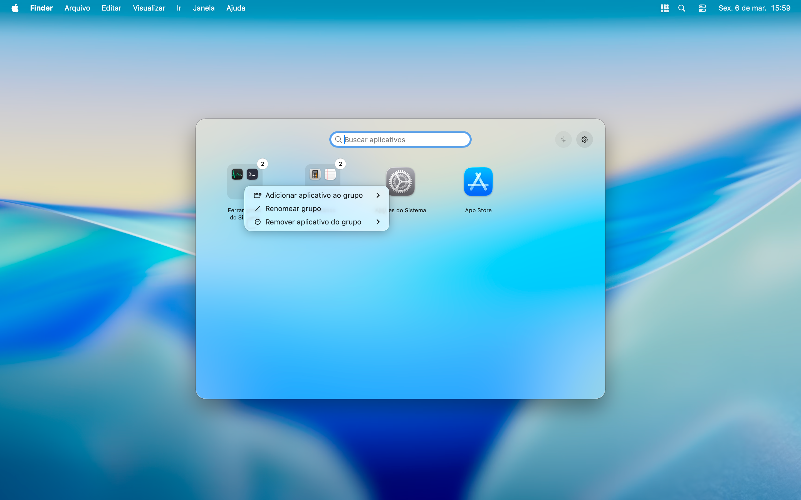